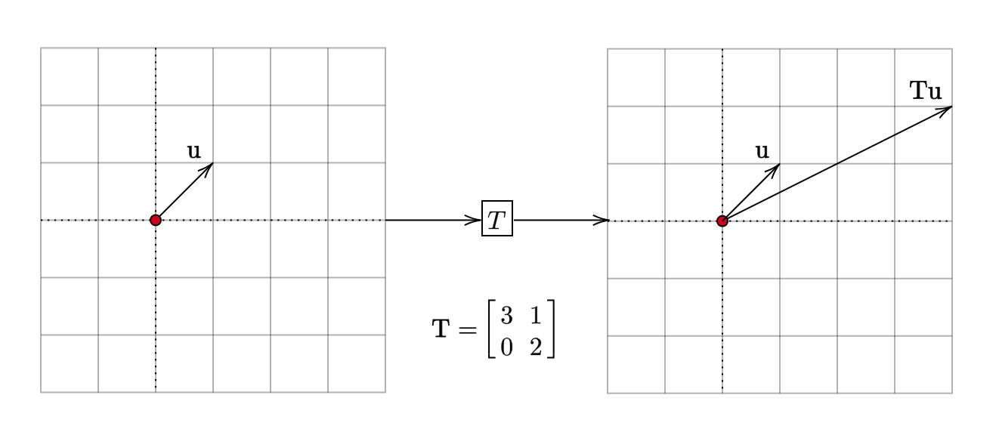

Eigenvalues and Eigenvectors
What are eigenvectors and eigenvalues?
Motivation
Let us consider the following linear transformation from \(\mathbb{R}^{2}\) to itself:
\[ \begin{equation*} \mathbf{T} =\begin{bmatrix} 3 & 1\\ 0 & 2 \end{bmatrix} \end{equation*} \]
We will look at how this linear transformation operates on vectors from the geometric point of view. Specifically, we will record these two quantities:
- direction of the vector before the transformation
- direction of the vector after the transformation
Case-1
The vector \(\mathbf{u} =\begin{bmatrix} 1\\ 1 \end{bmatrix}\) is transformed into \(\mathbf{Tu} =\begin{bmatrix} 4\\ 2 \end{bmatrix}\).

The vector \(\mathbf{u}\) was initially pointing in a particular direction. After the transformation, it points in a different direction. This case corresponds to vectors whose direction changes after the linear transformation.
Case-2
The vector \(\mathbf{u} =\begin{bmatrix} -1\\ 1 \end{bmatrix}\) is transformed into \(\mathbf{Tu} =\begin{bmatrix} -2\\ 2 \end{bmatrix}\)​.
The direction of the vector \(\mathbf{Tu}\) is the same as the direction of the vector \(\mathbf{u}\). In other words, the linear transformation has preserved the direction of this vector. However, its magnitude has changed. In this case, the vector \(\mathbf{u}\) has been stretched by a factor of \(2\).
\[ \begin{equation*} \mathbf{Tu} =\begin{bmatrix} -2\\ 2 \end{bmatrix} =2\mathbf{u} \end{equation*} \]
Another example for this case is the basis vector \(\begin{bmatrix} 1\\ 0 \end{bmatrix}\). For this vector:
\[ \begin{equation*} \mathbf{Tu} =\begin{bmatrix} 3\\ 0 \end{bmatrix} =3\mathbf{u} \end{equation*} \]
Visually:
This case corresponds to vectors whose direction remains unchanged after the linear transformation.
What we mean by direction here is a line passing through the origin. Each vector \(\displaystyle \mathbf{u}\) specifies a direction. Every scalar multiple of this vector, \(\displaystyle k\mathbf{u}\), can be said to be in the same direction as \(\displaystyle \mathbf{u}\). Note that this holds even if \(\displaystyle k\)​ is negative or zero.
For the remainder of this section, we will start using the symbol \(\mathbf{A}\) instead of \(\mathbf{T}\) and the symbol \(\mathbf{x}\) instead of \(\mathbf{u}\). This shift in notation is to emphasize that we will primarily focus on matrices while keeping linear transformation underlying them hidden from our view.
Eigenvectors and Eigenvalues
A non-zero vector which points in the same direction before and after the linear transformation is called an eigenvector. Since the direction of an eigenvector is unchanged by the transformation, it makes sense to look at the magnitude by which it is scaled after the transformation. This scalar value is called the eigenvalue. Formally:
Let \(\mathbf{A}\) be a square matrix of shape \(n \times n\). A non-zero vector \(\mathbf{x} \in \mathbb{R}^{n}\) is called an eigenvector of \(\mathbf{A}\) with eigenvalue \(\lambda\) if: \[ \mathbf{Ax} = \lambda \mathbf{x} \]
The eigenvector and the corresponding eigenvalue make up an eigenpair. For the matrix (linear transformation) that we have been working with, \(\left( 2,\begin{bmatrix} -1\\ 1 \end{bmatrix}\right)\) and \(\left( 3,\begin{bmatrix} 1\\ 0 \end{bmatrix}\right)\) are two eigenpairs.
Eigenspace
Consider an arbitrary \(n\times n\) matrix \(\mathbf{A}\). How big is the space of eigenvectors? Let \(\mathbf{A}\) be a matrix. If \(\mathbf{x}\) is an eigenvector of \(\mathbf{A}\) with eigenvalue \(\lambda\), what can we say about the vector \(2\mathbf{x}\)?
\[ \begin{equation*} \mathbf{A} (2\mathbf{x} )=2\mathbf{Ax} =2\lambda \mathbf{x} =\lambda (2\mathbf{x} ) \end{equation*} \]
We see that \(2\mathbf{x}\) is also an eigenvector with eigenvalue \(\lambda\). In fact, \(k\mathbf{x}\) is an eigenvector for every non-zero \(k\). Coming from another direction, let \(\mathbf{x}\) and \(\mathbf{y}\) be two eigenvectors for the same eigenvalue \(\lambda\). Then:
\[ \begin{equation*} \mathbf{A} (\mathbf{x} +\mathbf{y} )=\mathbf{Ax} +\mathbf{Ay} =\lambda \mathbf{u} +\lambda \mathbf{v} =\lambda (\mathbf{x} +\mathbf{y} ) \end{equation*} \]
Therefore, \(\mathbf{x} +\mathbf{y}\) is also an eigenvector of \(\mathbf{A}\) with eigenvalue of \(\lambda\). From these two observations, we see that the set of all eigenvectors with eigenvalue \(\lambda\), along with the zero vector, is a subspace of \(\mathbb{R}^{n}\).
\(\mathbf{0}\) can never be an eigenvector. This is because if \(\mathbf{A0} =\lambda \mathbf{0}\) then there is no fixed \(\lambda\) that we can associate with \(\mathbf{0}\). Therefore, eigenvectors are non-zero vectors.
Summary
For a square matrix \(\mathbf{A}\) of shape \(n \times n\), a non-zero vector \(\mathbf{x}\) is an eigenvector with eigenvalue \(\lambda\) if \(\mathbf{Ax} =\lambda \mathbf{x}\). Eigenvectors are those directions of \(\displaystyle \mathbb{R}^{n}\) that are preserved under the linear transformation corresponding to this matrix.